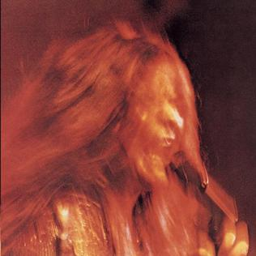

Day 14

Janis Joplin ◆ Little Girl Blue ◆ I Got Dem Ol’ Kozmic Blues Again Mama! ◆ 1969
原作 Richard Rodgers，歌词 Lorenz Hart。这份录音被收录在 Janis Joplins 离开 Big Brother and Holding Company 后的第一张专辑里。
Janis 的歌声有强大的感染力，仿佛心浸泡在歌声中，被平静的美好感受浸染。
Sit there, hm, count your fingers.
What else, what else is there to do?
Oh honey I know how you feel,
I know you feel that you're through.
Oh wah wah ah sit there, hm, count,
Ah, count your little fingers,
My unhappy oh little girl, little girl blue, yeah.
Oh sit there, oh count those raindrops
Oh, feel em falling down, oh honey all around you.
Honey dont you know its time,
I feel its time,
Somebody told you cause you got to know
That all you ever gonna have to count on
Or gonna wanna lean on
Its gonna feel just like those raindrops do
When they're falling down, honey, all around you.
Oh, I know you're unhappy.
Oh sit there, ah go on, go on
And count your fingers.
I don't know what else, what else
Honey have you got to do.
And I know how you feel,
And I know you ain't got no reason to go on
And I know you feel that you must be through.
Oh honey, go on and sit right back down,
I want you to count, oh count your fingers,
Ah my unhappy, my unlucky
And my little, oh, girl blue.
I know you're unhappy,
Ooh ah, honey I know,
Baby I know just how you feel.